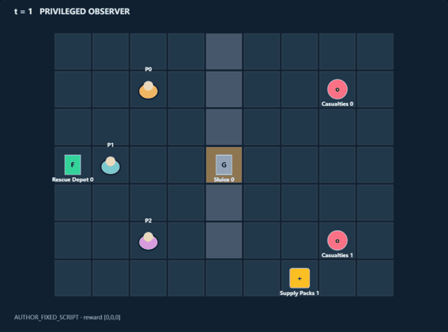
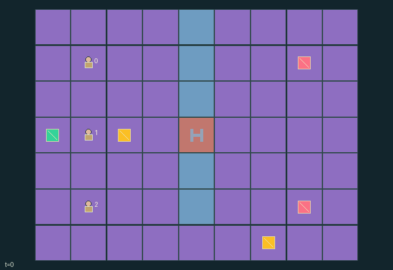

GI082 · Lantern Flood

Original recording scope: Original replay view · Mode: Fixed-script demonstration
Additional generated state replay (different trajectory / full-state debug)

Carry two casualties to Manhattan distance at most one from the depot. Each delivery gives all roles +1 and each expiry gives all roles -1.
Identity and original contract
3 independently actionable roles; 9 discrete commands per role; 121 native observation columns per role; original horizon 96 steps. Declared per-step reward range: -2 to 2. Observation regime: partially_observable.
Source SHA-256: ad66babf039e1ebd3643e035f8cd685e5641ebd2a67714c4e683c5a91ac5af2e
The objective, rewards, population, map and horizon remain original. A preview is not a success claim.
Objective and gameplay
Carry two casualties to Manhattan distance at most one from the depot. Each delivery gives all roles +1 and each expiry gives all roles -1.
Physical carry and mutual handoff, specialist treatment and route opening, scarce common supply, temporary shared sensing and finite unsupported lifetimes couple the three roles.
- Rigger spends two shared supplies to open the central sluice permanently.
- Medic spends one supply to stabilize an adjacent casualty and stop its countdown.
- Each role carries at most one casualty; paired adjacent handoff transfers to an empty receiver.
- Recover attempts casualty pickup before pack collection; lowest eligible index wins.
- Beacons last six ticks and share actual radius-two sensing with every role.
- Deliver carried casualties within one tile of the depot; unstabilized casualties can expire.
- Moves into other starting cells or shared requested destinations fail; no swaps.
- Both casualties resolved ends naturally; otherwise step 96 truncates. Raw terminal state absorbs.
Ending: Both casualty statuses resolved (rescued or lost), otherwise horizon 96. Natural completion has priority. Raw terminal calls absorb with zero reward.
What this game explores
Information, sensing & communication: Who knows a fact, when it was measured, and whether it was communicated are separate state variables. Test memory or communication using only the same role-visible evidence.
Joint transport & shared access: Positions, load geometry, occupancy and persistent access constrain whose action can succeed next. Distinguish physical handoff, shared controls and simultaneous force from a cosmetic cooperation label.
Survival, protection & rescue: Protection and repair alter another role's future feasible actions. Record losses, exposure, rescue and infrastructure as well as delivery; survival is determined by the actual kernel.
These are questions supported by rule structure, not observed learning effects.
Play it: operating walkthrough
crucibles play --game gi082Keep Python running and open its printed address. Select this game, set a seed and press Create session. The game itself is always English.
Assign a role range to Host with Assign / take over, or Assign all roles. Invite a second participant with Create player invitation, then assign a disjoint subset. Every original role is available.
For every owned role choose a legal command and press Queue. Arrow keys / WASD queue a declared directional action for the current role camera when available. Space or Advance one joint step advances everyone together. Non-directional games use the selectors.
Unqueued roles use the labelled untrained uniform-legal policy. Take over or release roles before the next step without resetting. Full-state debug is privileged and permanently logged; role cameras preserve permissions. Close the session to retain logs. Server restart does not restore sessions.
Complete command reference
IDs and English labels exactly match the manifest. Availability depends on role, resources, location and phase. An available action can still have no productive effect.
0·Wait
1·Move north
2·Move east
3·Move south
4·Move west
5·Recover: pick adjacent casualty if empty; otherwise collect adjacent supply pack
6·Specialist work: rigger opens sluice; medic stabilizes casualty; scout has no effect
7·Mutual adjacent casualty handoff
8·Place or renew six-tick shared sensor beacon
Roles and capability identifiers
These original role names describe capabilities, not interchangeable skins. Check each owned role's legal selector before planning handoffs.
agent_0·Scout: radius-four sensor
agent_1·Rigger: permanent sluice opening
agent_2·Medic: casualty stabilization
Information and observation permissions
Public map, gate, depot, supplies and aggregate outcomes. Scout Manhattan sensor radius 4, other roles 2, through walls. A live beacon shares radius-2 sensing around its fixed position with everyone. Entity attributes use actual visibility. Private diagnostic flags do not become public scene events.
The GIF is full-state debug and may reveal hidden entities or private state. Train on obs[agent], not the picture, state tree or another role's private row. Field slices and visibility are in the original manifest.
Reinforcement-learning integration
import jax
from crucibles_jaxmarl import make
env = make("gi082")
key = jax.random.PRNGKey(0)
key, rk, ak, sk = jax.random.split(key, 4)
obs, state = jax.jit(env.reset)(rk)
actions = env.sample_actions(ak, state)
obs, state, rewards, dones, info = jax.jit(env.step_env)(sk, state, actions)
done = dones["__all__"]Observations are float32 vectors of width 121; actions are scalar int32; masks have 9 entries. Supply all 3 roles each transition. Masked sampling is an engineering reference, not a trained learner.
step_env retains terminal data without reset. step performs outer autoreset and keeps terminal data in info["raw_state"] and info["raw_observation"]. Use dones["__all__"] for episode boundaries; separate completion, failure and time limit in analysis.
JIT or vmap equal identities and shapes. Split independent reset, policy and transition keys. Group different shapes explicitly; do not shrink the population or horizon. Host rendering stays outside training.
Training questions and fair evaluation
Define valid completion from the objective before fitting. Preserve original rewards and also report real deliveries/services, losses, resource state, unresolved episodes and per-role returns. Animation is not a reward signal.
Who knows a fact, when it was measured, and whether it was communicated are separate state variables. Test memory or communication using only the same role-visible evidence.
Positions, load geometry, occupancy and persistent access constrain whose action can succeed next. Distinguish physical handoff, shared controls and simultaneous force from a cosmetic cooperation label.
Protection and repair alter another role's future feasible actions. Record losses, exposure, rescue and infrastructure as well as delivery; survival is determined by the actual kernel.
Compare memory, communication or centralized critics under matched actor information. Declare critic access; keep actor inputs role-filtered. Match partner/opponent distributions, masks, compute and checkpoint selection. Final tests never enter fitting or selection.
Independent training runs or source-pairing blocks are inferential units; episodes from one policy are not independent training replications. Save hashes, keys, versions, device, time and cost. Negative, zero, failed and indeterminate outcomes are valid. No trained checkpoint or target score is supplied.
Classification and evidence
Overlapping editorial labels are reading aids, not proof of novelty, difficulty, strategic equivalence or learning effects.
- Information, sensing & communication
- Evidence
manifest.task.interaction: Physical carry and mutual handoff, specialist treatment and route opening, scarce common supply, temporary shared sensing and finite unsupported lifetimes couple the three roles.
- Evidence
manifest.task.observation_access: Public map, gate, depot, supplies and aggregate outcomes. Scout Manhattan sensor radius 4, other roles 2, through walls. A live beacon shares radius-2 sensing around its fixed position with everyone. Entity attributes use actual visibility. Private diagnostic flags do not become public scene events.
- Evidence
manifest.actions.8: Place or renew six-tick shared sensor beacon
- Joint transport & shared access
- Evidence
manifest.task.objective: Carry two casualties to Manhattan distance at most one from the depot. Each delivery gives all roles +1 and each expiry gives all roles -1.
- Evidence
manifest.task.interaction: Physical carry and mutual handoff, specialist treatment and route opening, scarce common supply, temporary shared sensing and finite unsupported lifetimes couple the three roles.
- Evidence
manifest.task.observation_access: Public map, gate, depot, supplies and aggregate outcomes. Scout Manhattan sensor radius 4, other roles 2, through walls. A live beacon shares radius-2 sensing around its fixed position with everyone. Entity attributes use actual visibility. Private diagnostic flags do not become public scene events.
- Survival, protection & rescue
- Evidence
manifest.task.objective: Carry two casualties to Manhattan distance at most one from the depot. Each delivery gives all roles +1 and each expiry gives all roles -1.
- Evidence
manifest.actions.5: Recover: pick adjacent casualty if empty; otherwise collect adjacent supply pack
- Evidence
manifest.actions.6: Specialist work: rigger opens sluice; medic stabilizes casualty; scout has no effect
Source, receipts and preview limits
The additional generated state GIF replays saved untrained legal actions through the original kernel. At most 25 actual endpoints include initial and terminal state; no invented interpolation. It is full-state debug, not the role observation. Where an original scene preview exists, it is displayed first with its own recorded information scope. The two recordings may use different trajectories and views.
Original source, observation slices, manifest and mechanism
Native receipt · Presentation receipt
Engineering passes do not establish learning. Nonzero floating differences remain recorded and undetermined; no new tolerance was introduced. Human scores remain unverified.